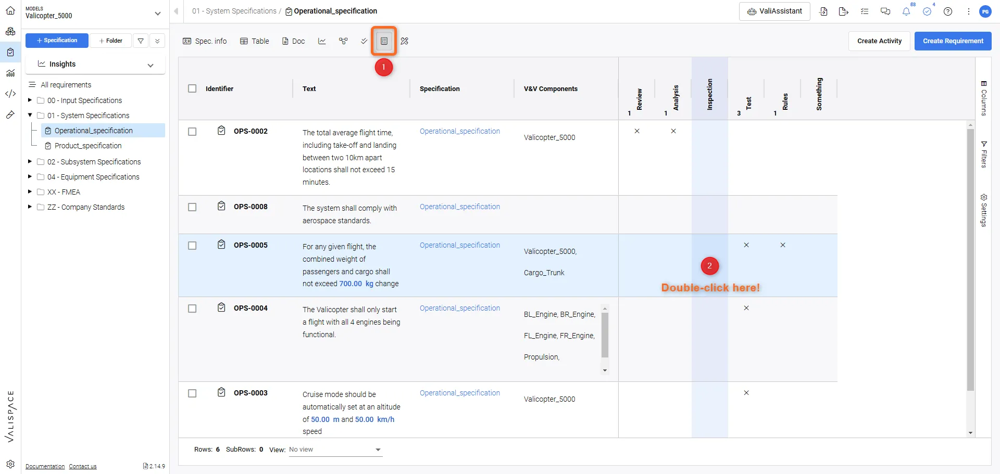
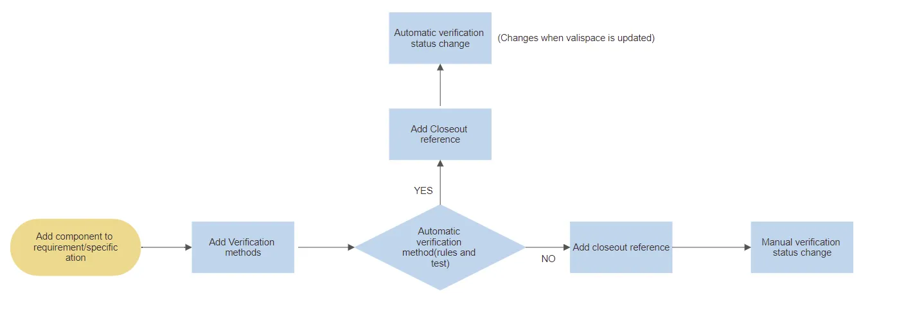
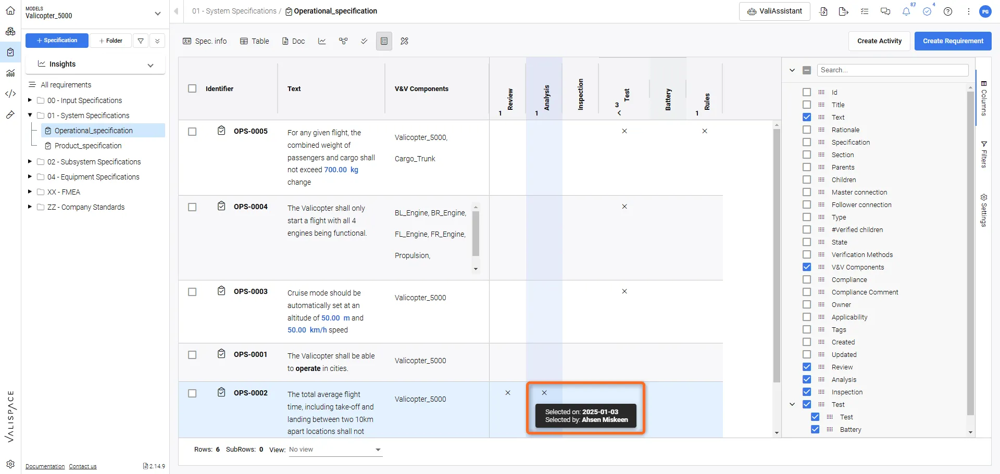

Impact
- Built fasterthan the first feature
- Agreed in writinguser stories and designs signed off together, an approach I started
- Users confirmed the fitit matched the matrix they already kept in Excel
The problem
Requirements engineers write each requirement in a fixed form, like a clause in a standard: “The wave height shall be measured with an accuracy of at least 0.30 m.” Each one is then reviewed and verified.
Verification is shared. Requirements change, and each method has its own specialists. Mistakes are costly: compliance, regulation, rework. Before, it lived in Excel, old documents, meetings, emails and paper signatures, with nothing connected.
Who needed what
- Verification engineer. Specialized in one method and works down one column
- Engineer on a dependent requirement. Needs to know what is already verified
- Manager. Needs to see if verification progresses as planned and is confirmed
- Everyone. Needs changes early, before they cause rework
The shipped feature

Five default methods. Analysis, Inspection and Review are closed by hand with a report or a status change. Rules and Test update automatically from the system data and from test runs.

Key design decisions
Engineers need control and many options, often more than less, matching Excel and other tools they know. Companies differ in size, roles and responsibilities. The design had to offer that choice without hurting usability.
- Built into the existing table. Tree left, matrix in the middle, column and filter selection right
- Kept the Excel mental model. Requirements as rows and methods as columns, as engineers already worked
- Choice through columns and filters. Each role shows only the methods and fields it needs
- Ownership logged. Name and date on every assignment, the digital form of a signature on paper
- Compliance states. Compliant, partially compliant, non-compliant, not applicable
- One source of truth. Decisions move out of emails and meetings into the system

Process
Interviews per role, user stories, a user journey, wireframes to hi-fi, and testing with experts and users from client companies.
The hard part was agreeing on the Must-haves. Clients feared that anything not marked Must-have would never be built. Applying the lesson from Master-Follower, I negotiated a clear Must-have version with them, written down and agreed before the build. The hi-fi prototype set the MVP boundary and helped developers grasp the logic faster.
Lessons learned
The prototype drove the discovery.
- Prototype as discovery tool
Its detail raised the questions that defined the MVP: what if one method is still open, and who was assigned? A small system that ships is worth more than a complete one that never does.
- Ask instead of assume
I was new to the domain, so I asked instead of assumed. Experts designing their own tools can miss their own bias, or hesitate to question a senior engineer or client.